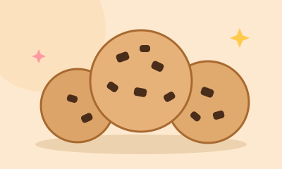

עוגיות שוקולד צ'יפס
מצרכים
- 200 גרם חמאה רכה
- 3/4 כוס סוכר חום
- 1/2 כוס סוכר לבן
- 2 ביצים
- 1 כפית תמצית וניל
- 2.5 כוסות קמח
- 1 כפית סודה לשתייה
- 1/2 כפית מלח
- 1.5 כוסות שוקולד צ'יפס
הוראות הכנה
- מחממים תנור ל-180 מעלות ומרפדים תבנית בנייר אפייה.
- מקציפים חמאה עם שני סוגי הסוכר עד שהתערובת בהירה ואוורירית.
- מוסיפים ביצים ווניל, ומערבבים.
- מערבבים בקערה נפרדת קמח, סודה ומלח, ומוסיפים בהדרגה לתערובת הרטובה.
- מקפלים פנימה את השוקולד צ'יפס.
- יוצרים כדורים בגודל כף, מניחים בתבנית במרחק זה מזה, ואופים 10 עד 12 דקות עד שהקצוות זהובים.
- מצננים 5 דקות בתבנית לפני שמעבירים לרשת.